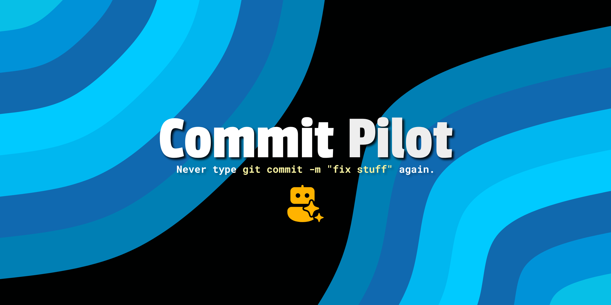

commit-pilot@git❯
cat README.md
# commit-pilot
Never type "fix stuff" again.
Local-first. Reads your uncommitted changes, groups related files,
and writes conventional commits via AI. No telemetry. Diffs only
go to the provider you configure.

commit-pilot@git❯
cat INSTALLATION.md
Installation
Install via the one-liner script:
❯ curl -sfL https://github.com/nisrulz/commit-pilot/releases/latest/download/install.sh | sh
Or build from source:
❯ make install
Provider setup
After installing, set up your provider and download the model:
LMStudio (default, gemma-4-e2b-it-qat)
Ollama (gemma4:e2b-it-qat)
OpenAI (gpt-4o-mini)
Unsloth Studio (gemma-4)
commit-pilot@git❯
cat USAGE.md
Usage
commit-pilot # auto-chunk into logical commits
commit-pilot --single # one commit for all changes
commit-pilot --dry-run # preview only
commit-pilot --yes # apply proposed commits without prompting
commit-pilot --doctor # check Git and provider setup
commit-pilot --list-models # list models from the provider
commit-pilot --plan-out plan.json # save a plan without committing
commit-pilot --apply plan.json # apply an edited plan
commit-pilot --staged # use staged changes only
commit-pilot --cleanup # remove temp files on success
Providers
Download the model in your provider first, then run commit-pilot.
Use environment variables or a user config file:
| env var | description | default |
|---|---|---|
| OPENAI_PROVIDER | Provider: lmstudio, ollama, openai, unsloth | lmstudio |
| OPENAI_MODEL | Model name | gemma-4-e2b-it-qat |
| OPENAI_BASE_URL | API base URL | http://localhost:1234/v1 |
| OPENAI_API_KEY | API key | unset |
OPENAI_PROVIDER=lmstudio commit-pilot # LMStudio (default)
OPENAI_PROVIDER=ollama OPENAI_MODEL=gemma4:e2b-it-qat commit-pilot
OPENAI_PROVIDER=openai OPENAI_API_KEY=sk-... commit-pilot
OPENAI_PROVIDER=unsloth OPENAI_API_KEY=sk-... commit-pilot
COMMIT_PILOT_CONTEXT_WINDOW=131072 commit-pilot # 128k context
Custom prompt
Override the default prompt with inline text or a file:
COMMIT_PILOT_PROMPT="Write concise commits" commit-pilot
COMMIT_PILOT_PROMPT_FILE=myprompt.txt commit-pilot
commit-pilot@git❯
cat CONFIGURATION.md
Configuration
Environment variable > config file > built-in default
| setting | env var | default |
|---|---|---|
| provider | OPENAI_PROVIDER | lmstudio (lmstudio, ollama, openai, unsloth) |
| model | OPENAI_MODEL | gemma-4-e2b-it-qat |
| api base | OPENAI_BASE_URL | http://localhost:1234/v1 |
| api key | OPENAI_API_KEY | unset |
| single commit | --single | auto-chunk |
| dry run | --dry-run | false |
| cleanup | --cleanup | false |
| prompt | COMMIT_PILOT_PROMPT | built-in |
| prompt file | COMMIT_PILOT_PROMPT_FILE | unset |
| context window | COMMIT_PILOT_CONTEXT_WINDOW | 65536 (64k tokens) |
| retries | COMMIT_PILOT_RETRIES | 2 |
| request timeout | COMMIT_PILOT_TIMEOUT_SECONDS | 180 |
| config directory | COMMIT_PILOT_CONFIG_DIR | ~/.config/commit-pilot |
| tmp summaries dir | COMMIT_PILOT_TMP_DIR | ~/.commit-pilot/tmp |
| conventional commits | COMMIT_PILOT_CONVENTIONAL_COMMITS | true |
| ticket prefix | COMMIT_PILOT_TICKET_PREFIX | unset |
| imperative tone | COMMIT_PILOT_IMPERATIVE_TONE | true |
| subject limit | COMMIT_PILOT_MAX_SUBJECT_LENGTH | 100 |
| body style | COMMIT_PILOT_BODY_STYLE | model default |
Reusable defaults go in a config.env file inside the config directory. Project config can set message preferences, but it cannot change the provider, model, or API base. Environment variables always win.
commit-pilot@git❯
cat HOW_IT_WORKS.md
How it works
Git scan - collects staged or unstaged changes
Token estimation - checks if diffs fit within the model context window
Batching - splits large diffs into window-sized batches; oversized files are chunked across multiple LLM calls
Auto-mode - summarizes up to four files at a time, then plans logical commit groupings
Single mode - all changes go into one commit
Execution - refuses partially staged files, then commits each logical group
With LM Studio, the context window is auto-detected based on available RAM and model limits. You don't need to configure anything.
See how-it-works.md for dry-run and commit output examples.
❯ commit-pilot
│
├ * feat(api): add user search endpoint
│ Add GET /api/users/:id endpoint.
│ > files:
│ - src/api/users.go
│ - src/api/query.go
│
├ * committed!
│
├ * docs: update readme
│ Fix typo in installation section.
│ > files:
│ - README.md
│
├ * committed!
commit-pilot@git❯
cat THANKS.md
No more "fix stuff" commits.
🔒 Zero telemetry. Use a local provider to keep diffs on your machine.